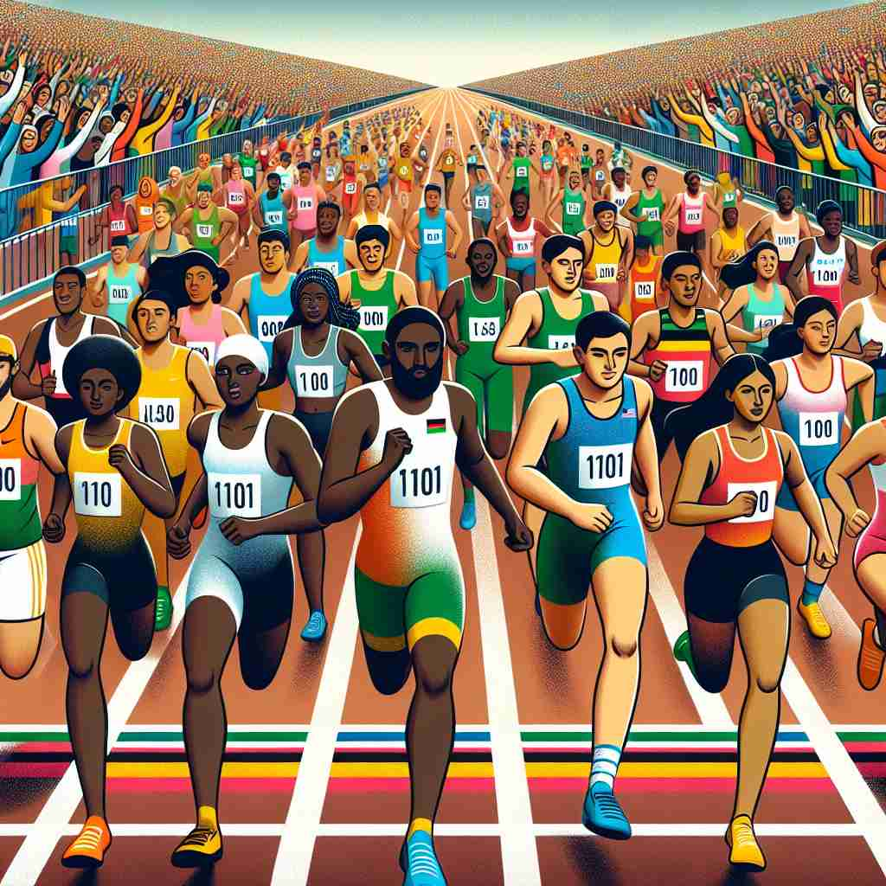

💬 The children are excited to join the race together.

💬 The runners are excited to start the race.
💬 The dogs are in a race for the frisbee.

💬 Many athletes are excited to join the race today.
🔈 [reɪs]
🗝️ n. a competition of speed, especially running, riding, or driving
🖼️ 在一个阳光明媚的赛道上，选手们全神贯注地站在起跑线上，观众们激动地呐喊着。随着一声发令枪响，选手们如箭般冲出，展开了一场激动人心的速度竞赛。这就是'race'作为速度比赛时的情景。
🔍 想象一场激烈的竞速比赛，选手们在赛道上飞速前进。这个核心画面能帮你联想'race'的各种含义：无论是实际的比赛、快速移动、人类群体的区别，还是水流的急速，都与这个竞速的概念紧密相连。通过这个核心意象，你可以更容易理解和记忆'race'的多重含义。
💬 The children are excited to join the race together.
💬 The runners are excited to start the race.
💬 The dogs are in a race for the frisbee.
💬 Many athletes are excited to join the race today.
🌳 该单词没有明显的词根词缀构成，一般认为来自古法语“rasse”，意为“部落”或“血统”。通常表示竞赛或比赛。也可以表示种族或人群。
💡 可以将 'race' 联想到比赛中的快节奏和竞争感，记住竞赛这一含义，也可以联想人群的多样性和种族的含义。
🗝️ v. to compete in a race
🖼️ 在一个热闹的马拉松比赛中，参加者们努力超越彼此，脸上挂着汗水和拼搏的神情。他们全力冲向终点，这便展现了'race'作为竞速比赛动词时的画面。
💬 The horses raced around the track.
❓ 由名词转化为动词，表示参与竞速
🗝️ v. to move or progress very quickly
🖼️ 在一个繁忙的城市中，一位快递员驾驶着自行车飞快穿行于车流和行人之间，迅速将包裹送到目的地。这展示了'race'作为快速移动时的含义。
💬 His heart was racing with excitement.
❓ 从竞速的概念延伸到一般的快速移动
🗝️ n. a group of people sharing the same culture, history, language, etc.
🖼️ 在一个多元文化节日上，来自不同'race'的社区成员穿着传统服饰，分享彼此的美食和舞蹈，展示着丰富的文化遗产，这体现了'race'作为共享文化、历史及语言的群体。
💬 We should respect all races and cultures.
❓ 比喻人类群体间的区别如同不同的竞赛选手
🗝️ n. a strong or rapid current of water
🖼️ 在一条湍急的河流中，水流快速冲过岩石，发出轰鸣声，形成了一道强大的水'race'，展示了另一种自然界的力量。
💬 The kayakers navigated through the dangerous races in the river.
❓ 水流的快速运动类似于竞赛中的速度
🗝️ n. a channel for water flow, especially in a mill
🖼️ 在一个古老的水磨坊里，一条窄窄的水'race'引导着水流向大水轮，推动着磨坊的运转，为谷物的磨制提供了动力。
💬 The old mill still has its original water race.
❓ 水流通过的狭窄通道，联想竞赛中的赛道